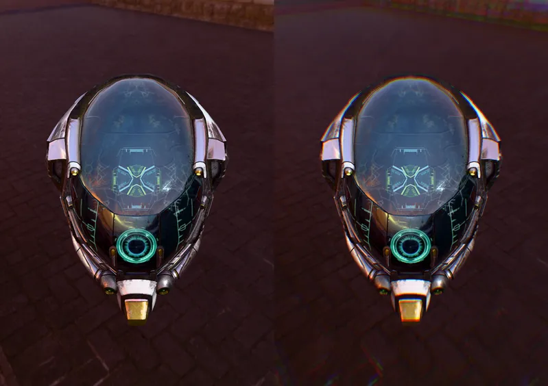

PostEffect > BuiltInEffect > Camera & Lens
Chromatic Aberration - RedGPU WebGPU Example
Example of Chromatic Aberration effect.
색수차 효과 예제입니다.

PostEffect > BuiltInEffect > Camera & Lens
Example of Chromatic Aberration effect.
색수차 효과 예제입니다.
